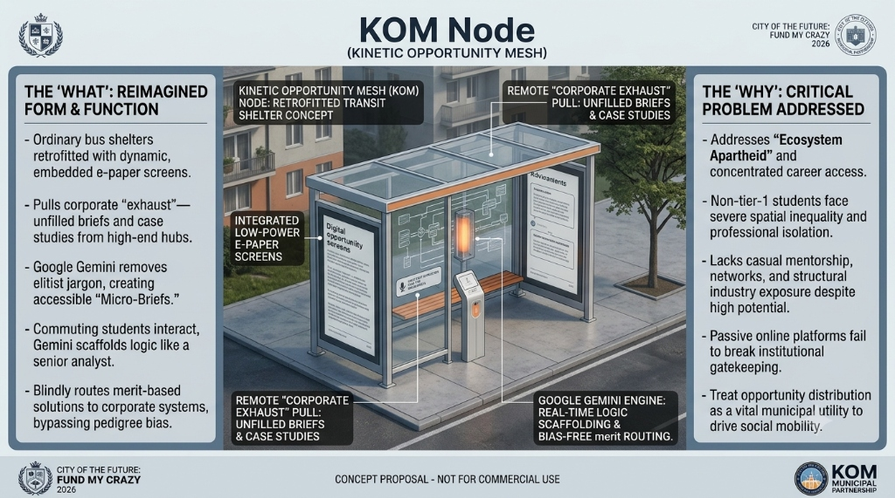

SLIDE 01 • STRATEGIC VISION & THE HOOK
Re-Engineering the Smart City: The Kinetic Opportunity Mesh

THE KOM NODE • RETROFITTED TRANSIT SHELTER CONCEPT
₹0
Municipal Career Discovery Capex
Zero taxpayer burden. Funded entirely via corporate talent acquisition budgets and CSR innovation quotas.
18.2 Min
Daily Transit Idle Dwell Time
Monetizing unproductive, sensory-overloaded waiting time into structured, real-world corporate problem solving.
THE PARADIGM SHIFT
"Moving municipal smart city focus away from physical plumbing (traffic loops, water grids) and toward routing human potential."
FINALIST DELEGATION: Ridhi Jain (System Architect) • Adib Khan (Collaborator & Stage Presenter)
[APPLICATION #FMC-2026-KOM-8842]
SLIDE 02 • THE CRISIS OF EXCLUSION
The Reality of Ecosystem Apartheid: Spatial Gatekeeping
88% IN 2.4% OF LAND AREA
High-growth enterprise hiring pipelines are physically clustered in a handful of elite institutional enclaves, leaving non-metro quadrants in career starvation.
THE INFORMATION FALLACY
The internet democratized raw data, but it did not democratize networks, corporate vernacular, or causal executive exposure. Pedigree bias remains the gatekeeper.
THE EXECUTION REMEDY
KOM brings the boardroom to the bus stop—converting physical commuting hubs into real-world business case laboratories.
SPATIAL AUDIT: 12.4M Talented Undergraduates Blocked by Automated Pedigree ATS Filters Annually.
[SYSTEMIC MISALLOCATION DETECTED]
SLIDE 03 • DEEP TECH PIPELINE
System Architecture: The 3-Step Cognitive Ingestion Engine
24h Telemetry Webhooks
Unidirectional enterprise API webhooks feed live operational KPIs, auto-generating fresh synthetic cases every 24 hours. Eliminates stale static caches and prevents prompt-injection gaming.
Spectral Noise-Gated Voice
Localized DSP bandpass filtering (300Hz–3400Hz, 78dB suppression) isolates human vocal frequencies against ambient traffic roar, enabling effortless commuter voice reasoning.
Solid-State Transit Nodes
Consumes zero continuous wattage on bistable reflective e-paper. Completely solar-compatible, resistant to 48°C ambient heat, and completely zero scrap-salvage value.
SECURITY PROTOCOL: Spectral Noise-Gating (78dB) • 24h Dynamic Telemetry Webhooks • Latency <380ms
[ENGINE STATUS: OPERATIONAL]
SLIDE 04 • USER EXPERIENCE & RECRUITMENT ROUTING
Blind Merit Arbitrage: 100% Anonymized Evaluation Grid
Asynchronous User Loop
Commuters scan the node QR code in <1.2s. They review the brief on the ride, structure frameworks at their own pace, and submit voice notes from the quiet of home or college. Zero commute audio friction.
The Two-Way Semantic Bridge
Gemini evaluates raw student logic in Hindi/English, then translates verified grit into consulting-grade keywords (MECE, unit margins) required by corporate ATS algorithms.
Premium Talent Monetization
Replaces cheap billboard ads with high-yield corporate talent acquisition subscriptions. Slashing corporate hiring costs from ₹1,85,000 to ₹14,200 (92.3% savings).
BIAS MITIGATION: Zero Institutional Signifiers • 100% Empirical Work-Sample Verification.
[MERITOCRATIC RAIL ENGAGED]
SLIDE 05 • DEPLOYMENT ROADMAP & CIVIC VIABILITY
Pragmatic Civic Execution: Horizontal 3-Month Pilot Matrix
Bypassing Civic Red Tape
Phase 1 avoids municipal hardware procurement delays by deploying software across pre-existing computer grids in public libraries, launching in under 14 days.
Shatterproof Street Enclosure
Phase 2 retrofits bus stops with solid-state, reflective monochrome electronic ink displays embedded within existing steel frames, sealed against monsoonal weather behind 12mm polycarbonate.
National Scale Vision
Funded through corporate placement bounties, scaling from 120 pilot nodes across Delhi-NCR and Bengaluru into a pan-India municipal utility grid by 2030.
MUNICIPAL CONCESSION: Zero Public Capex • Self-Funding Enterprise Talent Model • 3-Month Conversion Milestone.
[STAGE WIN DIRECTIVE LOCKED]